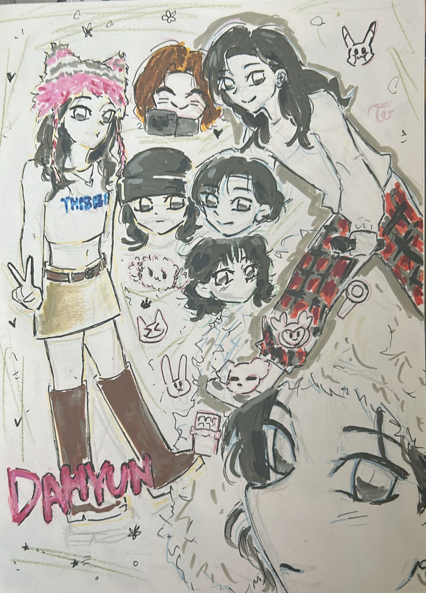
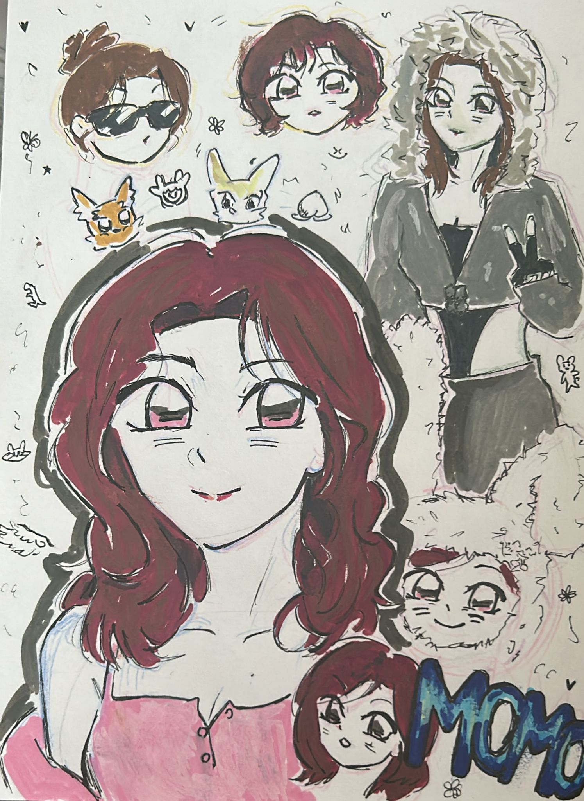
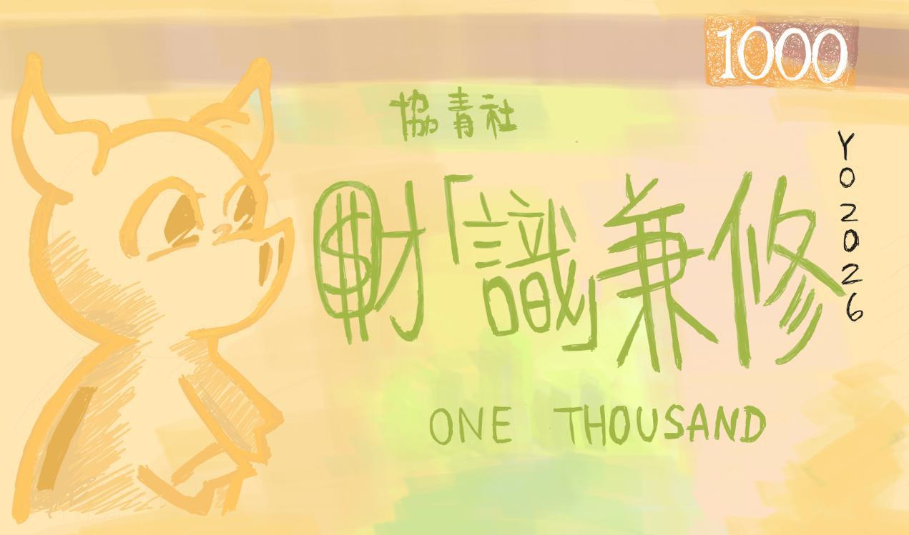

Basic Data:
Name: Zeta Hui
Preferred Name: Cola
ID Number: 23450
Personality: Outgoing, Cheerful, Passionate
Name: Zeta Hui
Preferred Name: Cola
ID Number: 23450
Personality: Outgoing, Cheerful, Passionate


I enjoy creating positive and joyful moments with the people around me. As an outgoing and cheerful person, I like to bring energy into social situations and make others feel included. These experiences help build strong relationships and a supportive environment.


Except creating positive moments, I also actively support others in daily life.



I also express my creativity through drawing.These works reflect my imagination, attention to detail, and personal style. Through this process, I am able to showcase my strengths and communicate ideas visually, which is another important aspect of my personal development.


Although I am a clumsy girl, always breaking things unintentionally or being forgetful, I am glad with having these great friends and my positive attitude allows me to connect with others and support them in everyday situations.